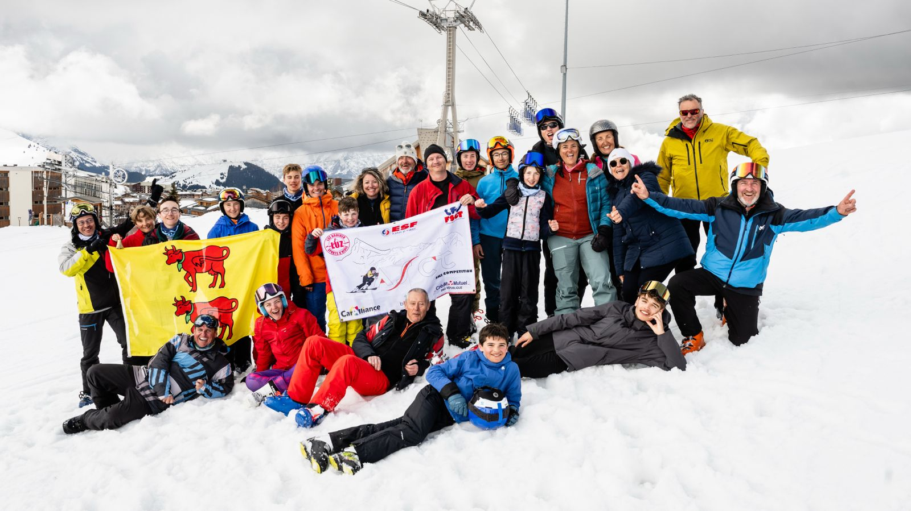
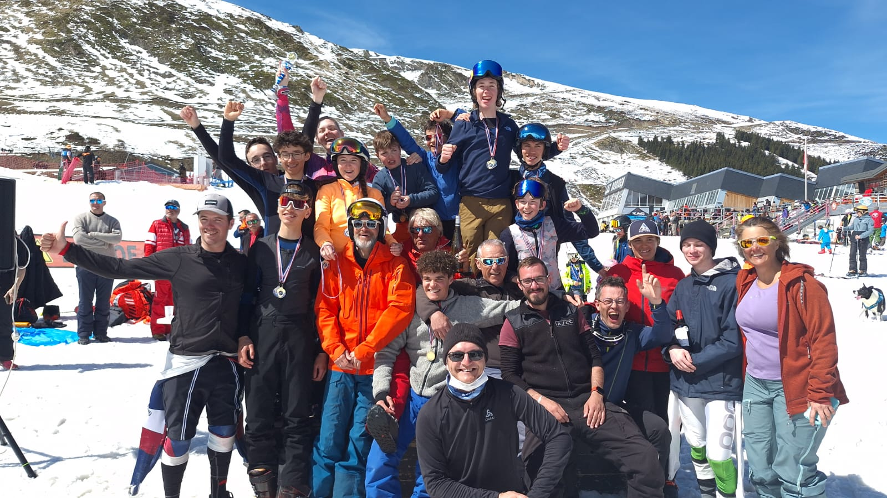
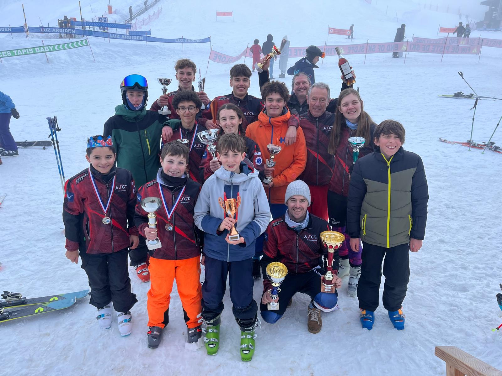
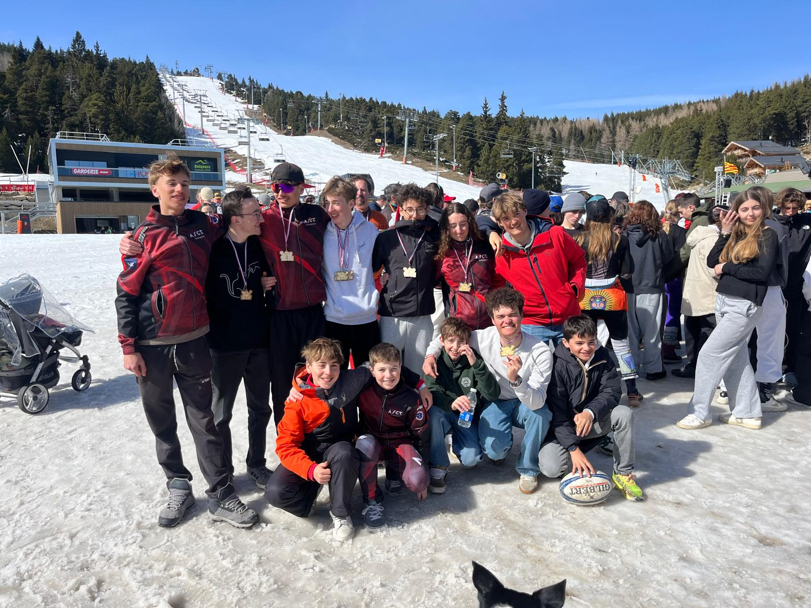

Nos Sections
Le Club


La section Ski Compétition accueille enfants et adultes souhaitant pratiquer ou perfectionner leur ski alpin 🎿
Chacun trouve sa place au sein du groupe pour progresser à son rythme, dans un cadre structuré et dynamique.
Notre approche repose autant sur le développement technique que sur l’humain : améliorer sa glisse, affiner ses trajectoires, gagner en maîtrise…
tout en partageant l’expérience avec les autres ⛷️
Ici, l’entraide et les conseils sont au cœur des entraînements.
On apprend les uns des autres, on se tire vers le haut, toujours dans un esprit positif et bienveillant.🤝
Mais le club, c’est aussi une ambiance : esprit d’équipe, moments conviviaux, rires et plaisir de se retrouver chaque semaine.
Parce que progresser, c’est encore mieux quand on le fait ensemble.
Les Entraînements
Au cœur de la station de Luz Ardiden ❄️, notre club vous propose des entraînements dynamiques et accessibles,
pensés pour progresser tout en prenant du plaisir sur les skis 🎿
Dès le début de saison, les séances sur piste permettent de (re)trouver les sensations et de consolider les fondamentaux du ski alpin moderne.
Un passage essentiel pour construire une technique solide et gagner en confiance.
Au fil des semaines, les entraînements évoluent sur des tracés dédiés de type Slalom Géant et Slalom Spécial ⛷️,
afin de développer précision, engagement et maîtrise.
Lorsque les conditions le permettent, des sessions “toutes neiges” viennent enrichir le programme pour apprendre à s’adapter à tous les terrains.
Les entraînements ont lieu chaque samedi, avec parfois des sessions supplémentaires selon les conditions météo et d’enneigement.
Encadrées par un entraîneur ESF, les séances garantissent un accompagnement adapté à chacun.
Au-delà de la technique, ce sont surtout des moments de partage 🤝 : esprit d’équipe, entraide et bonne humeur !
Les Compétitions


Tout au long de la saison, notre club participe aux compétitions organisées dans le cadre de la FSGT Hautes Pyrénées 🎿
Des courses de Slalom Spécial et Slalom Géant sont proposées régulièrement, le plus souvent le dimanche,
permettant à chacun de se confronter au tracé, de se dépasser et de vivre l’intensité de la course ⛷️🔥
Chaque année, le club organise également sa propre épreuve : l’ASCT – TurboCup. Un rendez-vous incontournable,
à la fois sportif et convivial, qui rassemble les participants autour d’une belle journée de ski.
Point d’orgue de la saison, le Championnat de France FSGT se déroule au mois de mars, alternativement dans les Alpes ou dans les Pyrénées.
Pendant 3 jours, les participants s’affrontent sur plusieurs disciplines : Slalom Géant, Slalom Spécial et Super Géant.
En 2026, cet événement s’est tenu à Font-Romeu Pyrénées 2000, offrant un cadre exceptionnel ❄️
Certaines photos de cette édition sont d’ailleurs disponibles sur le site.
Au-delà des résultats, les compétitions sont avant tout une expérience forte : dépassement de soi,
esprit d’équipe et plaisir de partager des moments uniques sur la neige 🤝